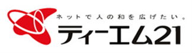
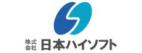

こんにちは世界！
3回目の Rails Girls Matsue が開催されます！
皆で Ruby on Rails の世界を楽しみましょう！
参加者を大募集します。 無料のワークショップですので、お気軽にご参加ください。
２月３日までにこちらから応募してください。
Hello world!
Rails Girls comes to Matsue again! During the free two-day workshop we'll dive into the magical world of Ruby on Rails.
概要 コーチに教えてもらいながらプログラムを設計して、プロトタイプを作り、コーディングします。
必要なもの 自分のノートパソコン、やる気とキラリと光るイマジネーションを持ってきてください！
コーチの募集を締め切らせていただきました。 たくさんのご応募、ご協力、ありがとうございました。
| 18:30開場 ～ | |
|---|---|
| 19:00 - 21:00 |
インストール・ディまずは、参加者同士、お互いに知り合いになりましょう。ご自分のノートパソコンをお持ちください。 それぞれのパソコンにRubyとRailsをインストールし、Rubyプログラミングの最初の一歩をコーチとともに始めてみましょう。 |
| 9:15開場 ～ | |
|---|---|
| 9:30 - 10:30 |
レジストレーション、コーヒー金曜日にRuby on Railsのインストールトラブルがあれば、朝のうちに解決しておきましょう。 金曜日にすべてうまく行ったひとは参加しなくてもOKです。10:00ごろからのんびり来てください。 |
| 10:30 - 10:45 |
開会一日の流れの説明。オーガナイザーから一言。 |
| 10:45 - 11:20 |
オープニング講演 & 記念撮影Rubyのお父さんまつもと ゆきひろ氏によるオープニング講演 ～Yukihiro Matsumoto～ |
| 11:20 - 12:30 |
ワークショップ ― ウェブアプリ構築はじめてのウェブアプリにトライしてみよう！ |
| 12:30 - 13:30 | ランチ |
| 13:30- 14:00 |
スポンサーによるライトニングトークス |
| 14:00 - 14:30 |
座学 ― RubyとRailsのおいしい使い方～つじた さとみ～ |
| 14:30 - 17:30 |
ワークショップ今日作ったウェブアプリを世界に公開したり、自分流のウェブアプリに変えてみよう！ |
| 17:30 - 18:00 |
休憩 |
| 18:00 - 20:00 |
アフター・パーティ参加者、コーチ、スタッフによるパーティです。ワークショップで聞き損ねたことや RubyやRailsのこと、ステップアップの方法など、コーチに気軽に質問してみましょう。 |
参加申し込みページを公開中！
参加申し込み締め切り:２０１７年２月３日
参加了承の連絡:２０１７年２月１０日
コーチの募集を終了！
ご支援いただけるパートナーを募集しております。こちらのフォームからご応募ください。
Rails Girls Matsue はすばらしいパートナーとの共同開催です。（順不同）
 私たち永和システムマネジメントは Ruby や Ruby on Railsを活用したアプリケーションをアジャイルに構築できる
日本有数のソフトウェア受託企業です。私たちはお客さまの投資を最大化すべく研鑽を続けています。
また、Rubyコミュニティの支援も2006年から積極的に行っています。
私たち永和システムマネジメントは Ruby や Ruby on Railsを活用したアプリケーションをアジャイルに構築できる
日本有数のソフトウェア受託企業です。私たちはお客さまの投資を最大化すべく研鑽を続けています。
また、Rubyコミュニティの支援も2006年から積極的に行っています。
 GitHub はソフトウェアの共同開発をするための最高の環境を開発・提供しています。1000 万人以上のユーザーが友だち、同僚、クラスメートと、時にはまったく知らない人とでさえ、コードなどを共有して素晴らしいプロジェクトを行っています。
GitHub はソフトウェアの共同開発をするための最高の環境を開発・提供しています。1000 万人以上のユーザーが友だち、同僚、クラスメートと、時にはまったく知らない人とでさえ、コードなどを共有して素晴らしいプロジェクトを行っています。
 クックパッド は、「毎日の料理を楽しみにすることで心からの笑顔を増やす」という創業理念のもと、料理レシピの投稿・検索サイトとして1998年3月にサービスを開始しました。現在の投稿レシピ数は200万品を超え、料理をする20～40代の女性を中心に、日本では月間のべ5,500万人以上にご利用いただいてます。さらに最近では、クックパッド を「食を中心とした生活インフラ」として進化させ、あらゆる生活シーンをもっと楽しく、便利に変えていくために、新しいサービスの創出に注力しています。
クックパッド は、「毎日の料理を楽しみにすることで心からの笑顔を増やす」という創業理念のもと、料理レシピの投稿・検索サイトとして1998年3月にサービスを開始しました。現在の投稿レシピ数は200万品を超え、料理をする20～40代の女性を中心に、日本では月間のべ5,500万人以上にご利用いただいてます。さらに最近では、クックパッド を「食を中心とした生活インフラ」として進化させ、あらゆる生活シーンをもっと楽しく、便利に変えていくために、新しいサービスの創出に注力しています。
 日本Rubyの会は、Rubyの利用者の支援とRuby(とRubyのライブラリ)開発者の支援を目的とした一般社団法人です。
現在は、ドキュメントの整備や、イベントへの参加協力等を中心に活動しています。
日本Rubyの会は、Rubyの利用者の支援とRuby(とRubyのライブラリ)開発者の支援を目的とした一般社団法人です。
現在は、ドキュメントの整備や、イベントへの参加協力等を中心に活動しています。
デジタルハリウッドSTUDIO米子
デジタル教育実績No1。全国7万人に卒業生輩出。米子でWebデザインとアプリを学べるスクール。いつでも好きな時に学べます。グラフィックデザイン・WEBデザイン・イラスト・動画などクリエイターへの転職やキャリアアップを実現できる“Webとアプリのラーニングスタジオ”です。
 株式会社spice lifeはECを通して世の中に笑顔を増やすサービスを作ります。spice lifeで開発するのはECの分野、ちょっと変わった、ちょっと新しい、ちょっと世の中を良くするようなECです。もちろんRailsで開発しています。オリジナルTシャツ作成サービスTMIXは各地のRailsGirlsのスタッフTシャツ作成もしています。
株式会社spice lifeはECを通して世の中に笑顔を増やすサービスを作ります。spice lifeで開発するのはECの分野、ちょっと変わった、ちょっと新しい、ちょっと世の中を良くするようなECです。もちろんRailsで開発しています。オリジナルTシャツ作成サービスTMIXは各地のRailsGirlsのスタッフTシャツ作成もしています。
株式会社ティーエム21
ティーエム２１は、サイトの企画制作からデザイン、システム開発、サーバー管理まで、Web分野で専門技術を追求するスタッフにより One Stop で様々なニーズにお応えできる体制を整えたWebのPro集団です。
 株式会社テクノプロジェクト
株式会社テクノプロジェクト
「笑顔をつなぐベストパートナー」をスローガンに、ITサービスを通じて笑顔が溢れる地域づくりを目指す企業です。島根県の医療情報ネットワーク「まめネット」をはじめ、皆さんの暮らしを支えるITサービスの開発にRuby on Railsを活用しています。
株式会社ネットワーク応用通信研究所
ソースコードを公開して誰でも自由に利用できるようにし、利用者や他の開発者からのフィードバックを取り入れながら進化を続ける、それがオープンソースソフトウェア(OSS)です。ネットワーク応用通信研究所(NaCl)は、Rubyの開発者であるまつもとゆきひろをはじめ、多くの社員がOSS/Rubyの開発に貢献しています。
フェンリル株式会社
デザインと技術にこだわったソフトウェア開発に取り組んでいます。ウェブブラウザ Sleipnirやデザインチームのためのプロジェクト管理ツール Brushupなどの自社プロダクト開発、大手クライアント各社とのスマートフォン・ウェブアプリの共同開発を通じて、細部までこだわりぬいたプロダクトを世界中のユーザーに届けています。
エクスウェア株式会社
公共系の長期安定プロジェクトを中心とした多岐にわたる開発案件で培ってきた品質や技術力を活かし、iPad・スマートフォン・クラウドコンピューティングを活用したビジネスソリューションを自社開発しています。中でも、「MOMONGAスマートソリューション」は、国内約5000社に導入され、ニーズはさらに拡大中。海外でもすでに導入実績があり、現在さらなる拡大の準備を進めています。
株式会社島根情報処理センター
私たち株式会社島根情報処理センターは、1972年から出雲市を中心にシステム開発・運用保守ならびにアウトソーシングを行っている企業です。豊富な経験で培ったノウハウを活かしながら、RubyやRuby on Railsを積極的に活用したサービスを提供しています。
株式会社日本ハイソフト
コンピューター導入企業に対して、システムの企画・提案・開発・運用指導・保守まで一貫したサービスを提供しています。また、Rubyを使用した自社製品として、企業活動におけるリスク低減を図る「リスクアセスメント」、有害物質の曝露の”見える化”を可能にする「リスクビューワ」の開発・販売に力を入れています。
株式会社シーエスエー
創業以来27年間一貫して、建築設備(電気工事など)の積算見積もりシステムや原価管理システム等のパッケージソフトを作って来ました。今や全国に2500社以上のお客様に導入戴き、「積算らいでん電気工事版」は業界導入実績No1です。
女性にも働きやすい環境で、結婚・出産後も長く勤める女性社員も多く、安心して働けます！
株式会社イーストバック
「オープンソース」「クラウド」「モバイル」の３つをキーワードに、ICTサービスを提供しています。教育の分野では、島根大学や松江高専へ講師を派遣し、Ruby人材の育成に貢献しています。また、島根県の事業「Ruby合宿」の運営を担当し、全国の学生へRubyプログラミングの楽しさを伝える役割を担っています。
株式会社八雲ソフトウェア
2013年に創業。ソフトウェア開発と人材派遣を事業の柱とし、東京で受注した案件を島根で開発するニアショアを推進しています。
山陰出身者のUターン社員が多く、東京や大阪での開発経験を積んだ先輩社員が島根本社に在籍しています。
社員の平均年齢が20代と若く、社員同士の雰囲気もよいので、みんな笑顔で仕事をしています。
当社はこのような職場の雰囲気をとても大切にしています。
株式会社アーリーブレーン
当社は、出雲市を拠点にしながら、リモートワークにより東京等県外のチームと一緒に、Webシステム、Webサービスの受託開発を行っている企業です。また、ソフトバンクのPepperを使ったアプリケーションやRaspberry Piを使用したIoTシステム、サイボウズ kintone を使った業務システムの開発にも取り組んでいます。島根・出雲で生活しながら最先端の仕事にチャレンジしたい方、大募集中！！
ファーエンドテクノロジー株式会社
オープンソースソフトウェアを活用したSaaSの提供を中心に、インターネット上の技術・知識を活用してよりよい社会の実現を目指すインターネットサービス企業です。特にプロジェクト管理ツールのRedmineについては、日本語情報サイトの運営やRedmine本体の開発への協力も行っています。
参加費はどのくらいかかりますか？ 無料です。申し込むときにはわくわくした気持ちだけあればいいです。
どのような人が参加するのでしょうか？ コンピュータを使ったことがある女性ならだれでも参加できます。 これまでに開催されたRails Girlsイベントには様々な年齢の女性がやってきました。 ご自分のノートパソコンをお持ちください。
男性も参加できますか？ 参加できます。ただし、必ずウェブアプリを作りたがっている女性と一緒に参加してください。 申し込み人数が多い場合はお断りすることがありますので、ご了承ください。
 Yumi Hosoda, organizer, coach
@yunn029
Yumi Hosoda, organizer, coach
@yunn029
 Kaori Yoshioka, organizer, coach
@yoshik98
Kaori Yoshioka, organizer, coach
@yoshik98
 Kiyoko Takeda, organizer, coach
@TakedaKiyoko
Kiyoko Takeda, organizer, coach
@TakedaKiyoko
 Ayako Makihara, staff
@makiaya55
Ayako Makihara, staff
@makiaya55
 Kaori Matsuoka, coach
@kaorim8
Kaori Matsuoka, coach
@kaorim8
 Atsue Kato,
Atsue Kato,  Megumi Kanatsu,
Megumi Kanatsu,  Takayuki Yoshioka, coach
Takayuki Yoshioka, coach
 Sho Hashimoto, coach
@sho_hashimoto
Sho Hashimoto, coach
@sho_hashimoto
 Nobuyuki Honda, coach
Nobuyuki Honda, coach
 Akihiro Sada, coach
@sada4
Akihiro Sada, coach
@sada4
 Toru Kurahashi, coach
@torukurahashi
Toru Kurahashi, coach
@torukurahashi